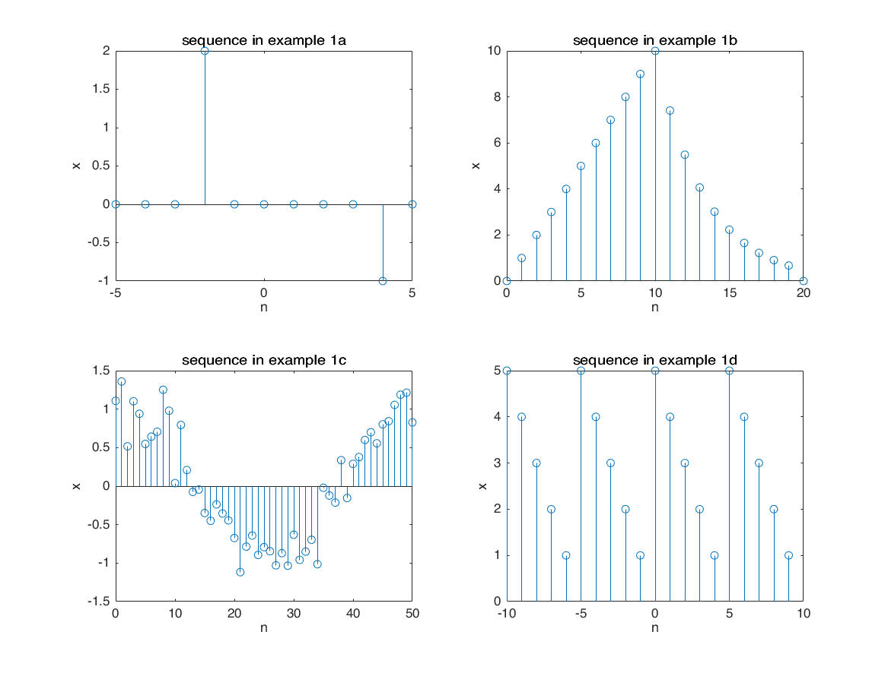

clc;clear;close all;
figure
n = -5:5;
x = 2*impseq(-2,-5, 5) - impseq(4,-5,5);
subplot(2,2,1)
stem(n,x)
title('sequence in example 1a')
xlabel('n')
ylabel('x')
n = 0:20;
x1 = n .* ( stepseq(0,0,20) - stepseq(10,0,20) );
x2 = 10*exp(-0.3*(n-10)) .* (stepseq(10,0,20)-stepseq(20,0,20));
x = x1 + x2;
subplot(2,2,2)
stem(n,x)
title('sequence in example 1b')
xlabel('n')
ylabel('x')
n = 0:50;
x = cos(0.04*pi*n) + 0.2*randn(size(n));
subplot(2,2,3)
stem(n,x)
title('sequence in example 1c')
xlabel('n')
ylabel('x')
n = -10:9;
x = [5 4 3 2 1];
xtilde = x' * ones(1,4);
xtilde = xtilde(:)';
subplot(2,2,4)
stem(n,xtilde)
title('sequence in example 1d')
xlabel('n')
ylabel('x')

n = -2:10;
x = [1 2 3 4 5 6 7 6 5 4 3 2 1];
[x11,n11] = sigshift(x,n,5);
[x12,n12] = sigshift(x,n,-4);
[x1,n1] = sigadd(2*x11,n11,-3*x12,n12);
figure
subplot(2,1,1)
stem(n1,x1)
ylabel('x')
xlabel('n')
title('sequence 1 in example 2')
[x21,n21] = sigshift(x,n,3);
[x21,n21] = sigfold(x21,n21);
[x22,n22] = sigshift(x,n,2);
[x22,n22] = sigmult(x,n,x22,n22);
[x2,n2] = sigadd(x21,n21,x22,n22);
subplot(2,1,2)
stem(n2,x2)
ylabel('x')
xlabel('n')
title('sequence 1 in example 2')
figure
n = -10:10;
alpha = -0.1+0.3j;
x = exp(alpha*n);
subplot(2,2,1); stem(n,real(x)); title('real part'); xlabel('n')
subplot(2,2,2); stem(n,imag(x)); title('imag part'); xlabel('n')
subplot(2,2,3); stem(n,abs(x)); title('magnitude'); xlabel('n')
subplot(2,2,4); stem(n,angle(x)*180/pi); title('angle (degree)'); xlabel('n')